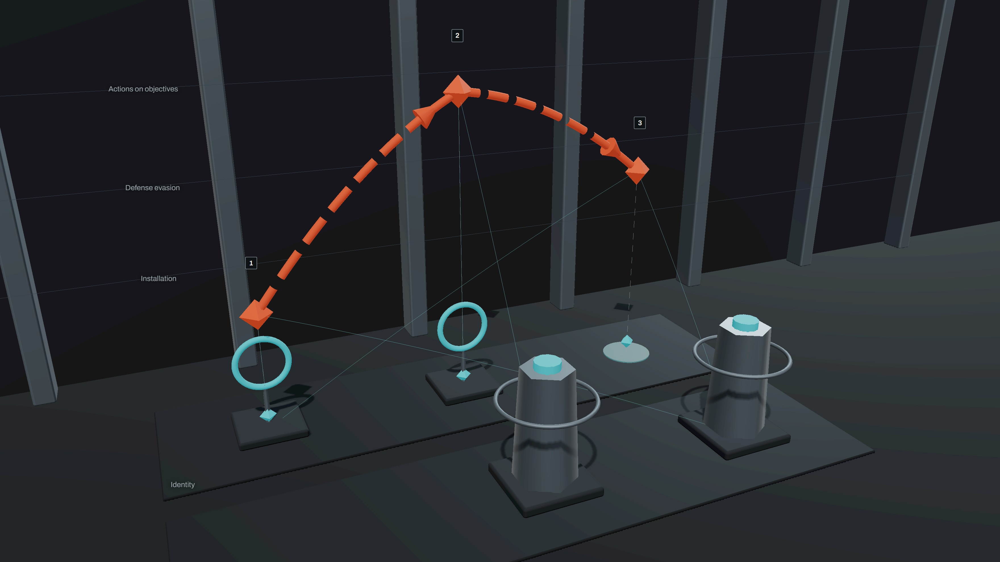

10G
Reconstructed, unconfirmed incidents
11 incidents? UNCONFIRMED
Proof-Carrying Kill Chain Intelligence
CyberForge PS2: Kill Chain and Attack Path Analysis
The promise
Turn noisy logs into defensible attack stories.
And refuse to invent one when the evidence cannot support it.
10G
Reconstructed, unconfirmed incidents
30G
Reconstruction withheld
50G
Partial reconstruction from a degraded source
| 10G | 30G | 50G | |
|---|---|---|---|
| Source received | 6.54 GB | 19.62 GB | 32.70 GB |
| Valid records | 9,125,382 | 8,138,878 | 61,970,767 |
| Exact duplicates found | 812,235 | 1,310,857 | 7,645,803 |
| Duration | 497.45 s | 543.53 s | 4,216.33 s |
| Peak memory, upper bound | 3.62 GB | 2.56 GB | 6.44 GB |
| Incident open, from receipt | 87.3 ms | Not applicable | 79.52 ms |
Recorded FireX results on the recorded machine. Not a performance guarantee.

Semantic 3D Attack World
Every position means something.
Nothing is decoration.
Rendered from the stored 10G incident on the next slide.
SourceTrace, on the stored 10G run, times in UTC
606 of 606
cited records resolve to their source line, in 10G and again in 50G
The events exist. Malicious intent is not established.
30G: Reconstruction withheld because the source does not provide a trustworthy time axis.
Zero incidents does not mean zero threats.
50G: Partial. Every incident rests on the part with usable time.
Activity among the collapsed records is unknown, not absent.
Trust Centre
Proof receipts valid in both 10G and 50G.
A seal shows that a receipt has not changed. It does not show that a conclusion is true.
Response Handoff
Live Intake
What we do not claim
Contain the threat.
Continue
the business.
From raw logs to evidence-backed attack paths.